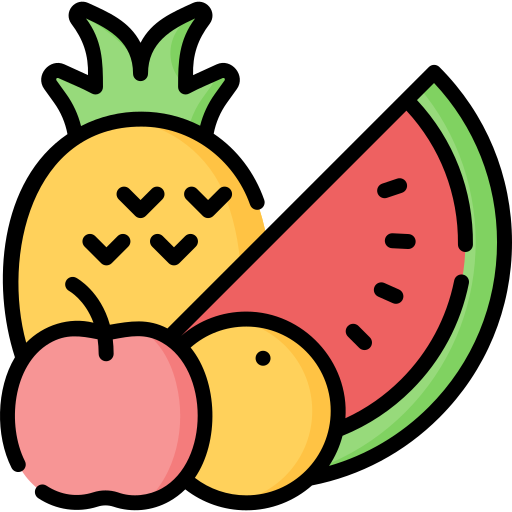
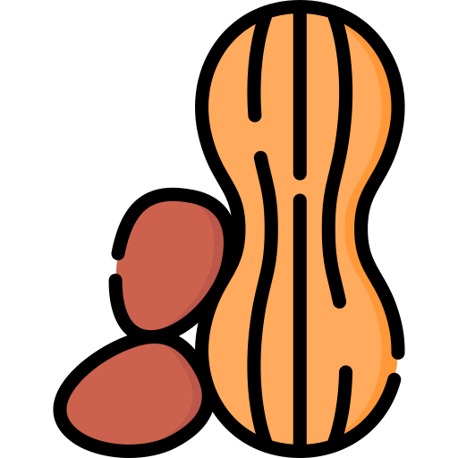
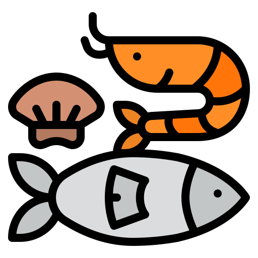
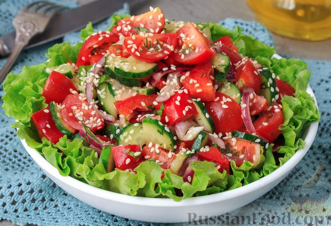
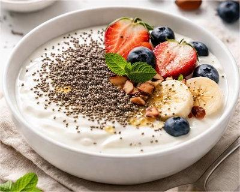
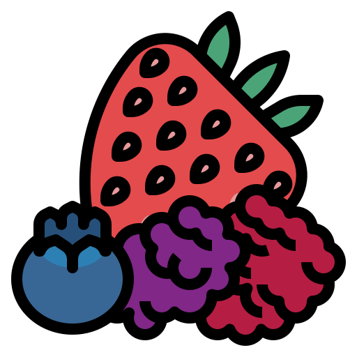

Принципы здорового питания
- Регулярное питание 3–4 раза в день
- Баланс белков, жиров и углеводов
- Употребление достаточного количества воды
- Увеличение количества овощей и фруктов
- Ограничение сахара и соли
Полезные продукты
Овощи
Источник витаминов, минералов и клетчатки.
Рекомендуется съедать 400-500 г некрахмалистых овощей в день, включая брокколи, морковь, шпинат, капусту и свеклу, для укрепления иммунитета, работы сердца и контроля веса.

ФруктыСодержат витамины, антиоксиданты и натуральные сахара.
Они содержат натуральные сахара (фруктозу, глюкозу), обеспечивающие энергию, при этом клетчатка замедляет их усвоение, предотвращая резкие скачки сахара в крови.

ОрехиПолезные жиры, белок и энергия для организма.
Рекомендуемая норма — 30-50 г в день, что помогает контролировать вес, утоляя голод.

РыбаСодержит омега-3 жирные кислоты.
Рекомендуется употреблять такую рыбу 2-3 раза в неделю, отдавая предпочтение холодноводным видам.
Вредные продукты
- Фастфуд
- Сладкие газированные напитки
- Избыточное количество сахара
- Жирная и сильно жареная пища
- Продукты с большим количеством трансжиров
Полезные рецепты

 Овощной салат
Овощной салат
- Огурец
- Помидор
- Листья салата
- Оливковое масло


Йогурт с фруктами- Натуральный йогурт
- Банан
- Ягоды
- Мёд

Овсяная каша
- Овсяные хлопья
- Молоко/вода
- Ягоды
- Орехи
Больше рецептов можно узнать на FitStars